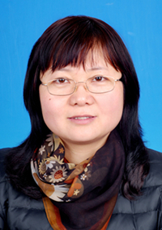

葛丽芹
葛丽芹，女，教授/博导。2003年毕业于中国科学院化学研究所，获物理化学博士学位。从1999年起致力于层层组装制备功能材料研究，目前相关研究成果已在国际期刊发表SCI论文50多篇，授权专利8项。2016年10月起任Nature集团期刊Scientificreports编委。
工作经历：
2005年—–目前， 东南大学生物电子学国家重点实验室 教授/博导
研究经历：
1999年—-2003年 中国科学院化学研究所，北京
2001年—-2003年 德国马普胶体与界面科学研究所（Max-Planck Institutefor colloids and interfaces） 德国/波茨坦 马普奖学金获得者
2004年—-2005 年 加拿大麦吉尔大学（McgillUniversity）生物科学与医学工程学院 加拿大/蒙特利尔 牙医冠名奖学金获得者
2006—-2008年 日本大阪大学（OsakaUniversity）激光工程研究中心 （2009年访问学者）日本国军方重大项目leading project资助
研究方向：
1、仿生涂层在生物医学工程和农业方面的应用研究
2、自修复功能材料
研究项目：
1、国家自然科学基金
2、东南大学优秀青年教师资助计划/自然科学基金预研基金
3、国家级国防重大研究专向
荣誉及奖励：
1、2011年东南大学校长书记特别奖—— 重大专项奖
2、2011年度东南大学保密先进个人
3、2012年度东南大学常州市人民政府奖教金
教学：
主讲本科生课程“细胞生物学”“现代生命科学导论”，研究生课程“组装与功能”
代表作品：
1. ChongYao, JiaoyuRen, Cihui Liu, Tao Yin, YanxiZhu, and LiqinGe*，Hydrogel Improved the Response in the Titania/Graphene Oxide One-Dimensional PhotonicCrystals，ACS Appl. Mater. Interfaces 2014, 6,16727−16733
2. Yanxi Zhu, HongyunXuan, JiaoyuRenand LiqinGe*,Self-healing multilayer polyelectrolyte composite film with chitosan and poly(acrylic acid),Soft Matter,2015, 11, 8452–8459
3.Yanxi Zhu, Xinmin You, JiaoyuRen, Zhigang Zhao*,LiqinGe*, Self-healing polyelectrolyte multilayered coating foranticorrosion on carbon paper，Journal of colloid and interfacescience，493（2017）342-3484.
4. Yanxi Zhu, HongyunXuan, JiaoyuRen, Xuefan Liu, LiqinGe*,ColorTunable Ultrathin Films Capable of Healing Multiple Scratches，Chemnanomat 8（2016）791-795
5. Xuefan Liu, Yanxi Zhu, JiaoyuRen, HongyunXuan, Jianhao Zhang*, LiqinGe*, Multilayer Edible Fresh-keeping Films’Characterization and Their Preservation Effect, Chemistryselect, 2016,1（13）3607-3611
每年拟招收2-3名硕士研究生，1-2名博士研究生，1-2名博士后，欢迎具有化学，生物，物理，材料，医学，电子，计算机背景的学生报考！联系方式：email: lqge@seu.edu.cn电话：025-83795632-809